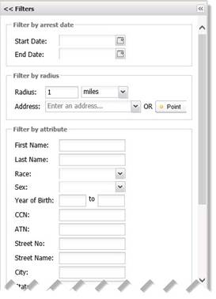

Jefferson
Parish Sheriff’s Office
Digital
Inmate Address Locator (DIAL)
Jefferson Parish
Sheriff’s Office Digital Inmate Address Locator
Jefferson Parish Sheriff’s Office Digital Inmate Address
Locator (JPSO-DIAL) provides law enforcement personnel relevant geospatial
information that can be used to aid in investigative analysis. This software
program allows authorized JPSO users to query and filter arrestee/inmate data
to create relevant maps overlaid with prior incident data from the JPSO Case
Management System (CMS). By performing a geospatial query on a location, investigators
can identify potential witnesses or informants.
The JPSO-DIAL application supports the following web
browsers Internet Explorer 9 or 10, Firefox, and Google Chrome (latest
version). In addition, JavaScript must be enabled to run the application.
The JPSO-DIAL Desktop
The Jefferson Parish Sheriff’s Office Digital Inmate Address
Locator (JPSO-DIAL) application has a graphical user interface controlled using
the mouse and keyboard. The JPSO-DIAL desktop features the Map Viewport with associated
Filters on the left, and Query Results in the bottom section (see Figure 1).
Figure 1: Jefferson Parish Sheriff's Office Digital Inmate Address Locator (JPSO-DIAL)
desktop
Filters – Provides data entry fields to query and filter
by.
Filter Functions – Provides user Query and Clear
options for data entered in Filter fields.
Map – Displays
a map of the area you are working within.
Toolbar – Features icons for quick access to common
functions.
Query Results – Provides results from search of
data entry fields in Filter section.
Export to Excel – Allows user to export and save the Query Results list as
a file.
Filters
The Filters section provides search
parameters to enter information to search by to provide relative spatial data
from the JPSO CMS database (see Figure 2). The Filters section
is expanded by default, but can be collapsed by clicking on the Filters section
header or the button in the corner.
The Filter by arrest date parameters allow the
user to enter a Start Date and End Date arrest date range. If
the End Date field is left blank, the system will search from the Start
Date entered up to the current date. If the Start Date field is left
blank, the system will search as far back as the database permits; however,
this is not recommended as this search could slow the system down.
The Filter by radius parameters allow the user
to choose a location center and range to search within. The Radius must
be set first to determine the search area. After the Radius is set, the
user can either enter a street or a specific street address in the Address
field or can select the Point button and click a place on the map to set
the center of the search area within the Radius specified. If the Point
button is selected, the button stays activated until de-selected; therefore,
once a Point is placed on the map, it is recommended to de-select the Point
button to avoid accidentally moving the center of the search area.
The Filter by attribute parameters provide the
user fields to search by arrestee/inmate data (ex. First Name, Last Name, Race,
Sex, Address, etc.). Attributes are inclusive, meaning all data entered in the
attribute fields is used in the search; and blank fields are not included in
the search.
The Toggle Boundaries allows the user to
select which shapefiles are applied to the map. Shapefiles are groups of vector
data formats featured into layers used in GIS software. The default shapefile
layers in the JPSO-DIAL application are Parishes, Districts and Reporting
Areas.

Figure 2:
Filters section search parameters
Filter Functions
Filter Functions at the bottom of the Filters
section allow the user to select “Query” to search the JPSO CMS database or “Clear”
the fields in the search parameters (see Figure 3).
Figure 3:
Filter Functions
To perform a search in the JPSO-DIAL application:
1. In
the Filters section, enter data in the any of the search parameter
fields:
·
Filter by arrest date:
Start
Date: enter a date or click the calendar icon to open the calendar control
feature to select an arrest date to start the search from.
End
Date: enter a date or click the calendar icon to open the calendar control
feature to select an arrest date to end the search on.
·
Filter by radius:
Radius:
enter a range for the search area from the address entered or point selected.
Address:
enter a location (address, street or city) and press Enter to set the search
area.
- OR -
Point:
click the “Point” button and with the mouse, click a place on the map to set the
search area.
·
Filter by attribute:
First Name:
enter the first name of the arrestee or inmate.
Last Name:
enter the last name of the arrestee or inmate.
Race:
select the race of the arrestee or inmate.
Sex:
select the gender of the arrestee or inmate.
Year of Birth:
enter the birth year range of an arrestee or inmate.
CCN: enter
the unique CCN identifying number of the arrestee or inmate.
ATN: enter
the unique ATN identifying number of the arrestee or inmate.
Street No.:
enter the street number of the arrestee or inmate.
Street Name:
enter the street name of the arrestee or inmate.
City:
enter the city of the arrestee or inmate.
State:
enter the state of the arrestee or inmate.
Address Type:
select whether the address type is Arrest or Home.
2. Click
a Filter Function:
·
“Query” - click to search the JPSO CMS database.
·
“Clear” - click to delete the data entered in the search
parameters.
Map
The JPSO-DIAL application Map is a graphical
representation of roads and parish boundaries from Open Street Map. Map content
is managed by data entered in the Filters search parameters and displays
the area within the radius chosen of the Address entered or Point selected on
the map (see Figure 4). Users can hold down the left mouse button to
“pan” the map to adjust the visible area or can use the arrows at the top left corner
of the map to move the visible area up, down, left or right. A zoom
scale is provided to adjust the zoom level of the Map, or users can use the
mouse scroll wheel to zoom in/out.
Figure 4: JPSO-DIAL
Map after a Query
Users can perform additional map functions using the
following buttons in the Toolbar:
Toolbar
The Toolbar features icons for quick access functions
available to further manage the map. Mouse-over an icon to see what clicking
that icon will do. Below are descriptions of the icons in the toolbar:
|
Icon
|
Name
|
Explanation
|
|
|
Zoom to Selected Feature
|
Zooms to the selected feature after a query result is clicked.
|
|
|
Zoom to Max Extent
|
Zooms out to the extent of all layers for the area.
|
|

|
Zoom In
|
Zooms in to a point by a click of the mouse.
|
|

|
Zoom Out
|
Zooms out from a point by a click of the mouse.
|
|
|
Zoom to Previous Extent
|
Zooms back to the previous zoom setting.
|
|
|
Zoom to Next Extent
|
Zooms to the next zoom setting (after Zoom to Previous Extent).
|
|
|
Show Help
|
Displays help content information for the JPSO-DIAL application.
|
Query Results
After a Query is performed, the Query Results table
provides records from the JPSO CMS database for arrestee/inmate residence and
arrest location data situated within the area of the Filter search parameters queried
(see Figure 5). Each query result record is a “feature” and has
“attributes” that provide detailed information for that record. Data in the Query
Results table can be resorted in ascending or descending order by clicking
on a column header in the table.
Figure 5:
Query Result from a Filters query
Clicking on a record in the Query Results highlights the
selected “feature” on the map (see Figure 6). The user can use the
click the “Zoom to Selected Feature” toolbar button to zoom in closer.
Figure 6: Selected
Query Result "feature" highlighted as a point on the map
If no records are found within the search area using the
Filters search parameters, the user will receive a message “Your query did not
return any results.” To expand the search, either increase the radius, or change
the data in the Filters search parameters.
Export to Excel
After performing a query within the JPSO-DIAL system, the data
returned in the Query Results section can be saved for further analysis. By
clicking the Export to Excel button in the bottom right-hand corner, the
application exports the data in the Query Results section to a file to be saved
by the user (see Figure 7). This saved file can be opened in Microsoft
Excel for further manipulation and/or analysis.
Figure 7:
Export to Excel